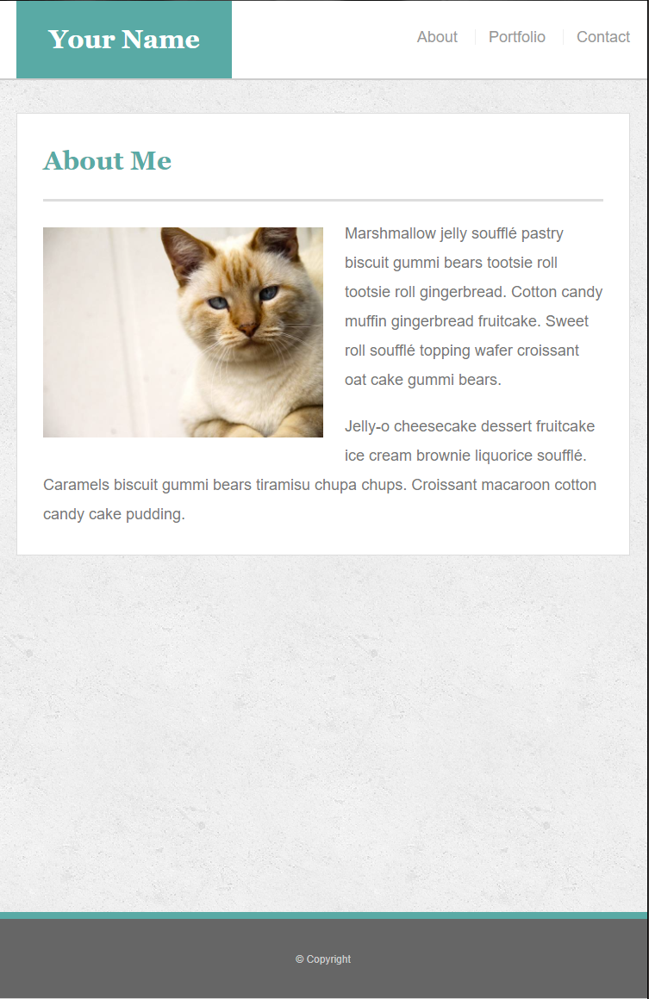
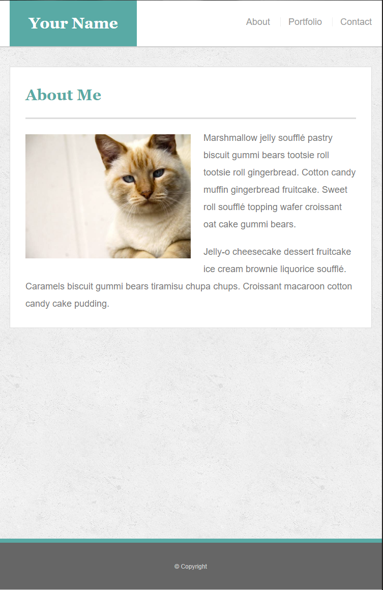

About Me

 

My name is Jeffrey Neal Crump. I grew up in a small farming town called Turkey, Texas. I am the middle child. I have an older sister and a younger brother. My high school was small. I had 27 people in my graduating class. I grew up wanting to be a professional football player. I played football in high school but I blew out my knee when I was a senior. That was the end of my dreams of playing football at the professional level. I have been working in Information Technology for more than 20 years. When I started you made data requests on a dumb terminal and the request was processed by a mainframe. I was there when server technology was introduced and businesses started migrating to client-server architecture. I have also witness the return of the terminal-mainframe architecture with the popularity of cell phones and small portable devices.